CASE STUDY 02 / PROFESSIONAL EXPERIENCE · BUILT FROM SCRATCH
New CSV
processing workflow.
A Logic Apps workflow developed from scratch for a fresh business requirement. It processes a CSV input with SQL business rules, creates TXT outputs and hands them to the next stage.
Static diagram

NEW REQUIREMENT
Build the flow
around the need.
- A CSV arriving in a designated hot folder starts the Azure Logic Apps workflow.
- The input is archived at the location specified by the business.
- SQL stored procedures apply the required business rules.
- The workflow generates the required TXT output files and delivers them to the destination required for subsequent processing.
- The workflow emails the generated TXT files as attachments. The recipient list is static and configured in Logic Apps.
NOT A MIGRATION
This flow was developed from scratch for a new business requirement. It is separate from the Redpoint workflows migrated to Azure Logic Apps.